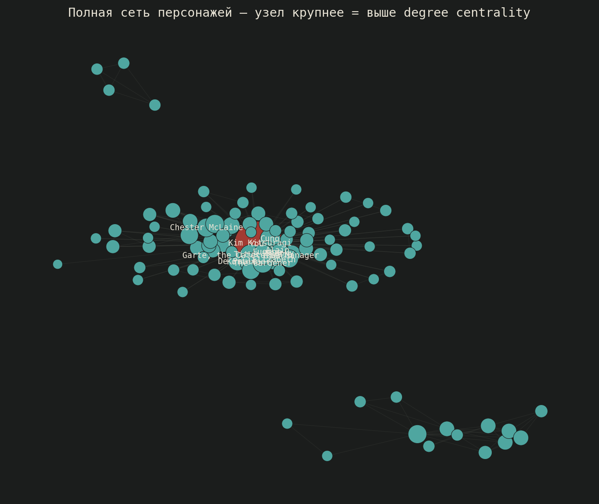
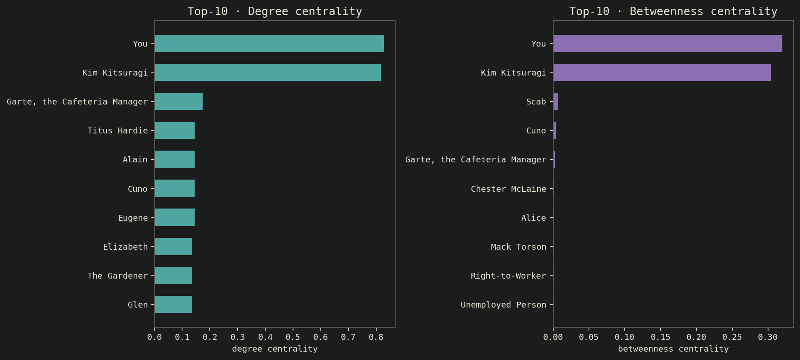
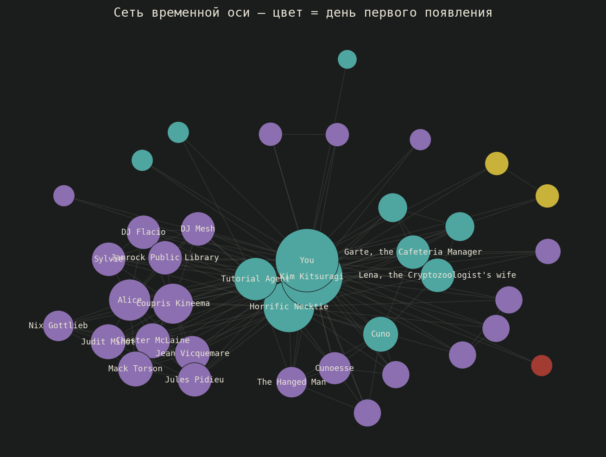
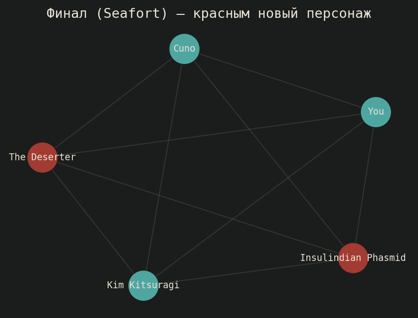

105 персонажей, 368 связей. Кто на самом деле держит сюжет — по диалоговому дампу игры.
Граф совместных появлений: вершина — персонаж, ребро — общая сцена. Источник — датамайнинговый дамп диалоговой базы игры. Вопрос: как позиция в сюжете (начало / середина / финал) определяет позицию в сети.
Degree и betweenness centrality сходятся на двух протагонистах. По пути найдена и исправлена методологическая ошибка: частоту совместных появлений нельзя передавать в betweenness_centrality как weight — networkx читает его как расстояние, а не как силу связи.

Топ-10 по degree centrality и по betweenness centrality — не одни и те же лица. Высокий degree — это массовость связей, высокий betweenness — позиция посредника между группами персонажей.

Из 63 сцен с надёжно верифицированным днём (10.7% от 590 сцен игры) видно: основной состав вводится уже на 1–2 день, дальше плотность новых связей затухает к 4–5 дню. Цвет узла = день первого появления.

В финальной сцене 2 из 5 персонажей — Insulindian Phasmid и The Deserter — не встречаются больше нигде в игре, и оба напрямую связаны с раскрытием тайны.

Данные — датамайнинговый дамп диалоговой базы disco-api (SQLite, ≈40 МБ). Весь разбор, включая методологическую ошибку и её исправление, — в ноутбуке.